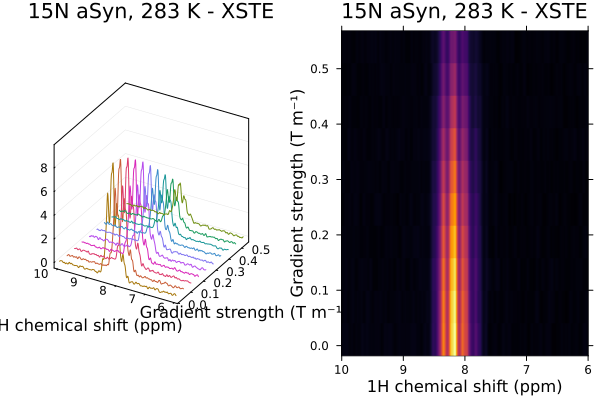
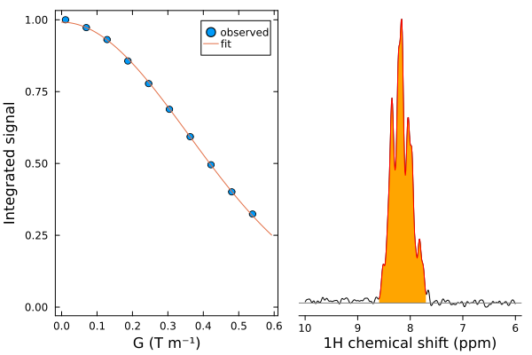

1D diffusion analysis
Let's analyse a 15N-edited XSTE measurement of translational diffusion. This experiment was acquired as a single pseudo-2D measurement, with gradient strengths ranging from 2 to 98% of the maximum strength, 0.55 T/m.
First, we need to load the required packages. We will use LsqFit for the non-linear least squares fitting, Measurements to handle uncertainties, and Statistics for calculation of means and standard deviations.
using NMRTools
using Plots
using LsqFit
using Measurements
using Statistics
spec = exampledata("pseudo2D_XSTE")┌ 2048×10 NMRData{Float64, 2} ┐
├─────────────────────────────┴────────────────────────────────────────── dims ┐
↓ F1Dim Sampled{Float64} LinRange{Float64}(14.69741, -5.298823244973492, 2048) ReverseOrdered Regular Points,
→ X2Dim Sampled{Int64} 1:10 ForwardOrdered Regular Points
├──────────────────────────────────────────────────────────────────── metadata ┤
Dict{Symbol, Any} with 18 entries:
:rg => 128
:filename => "/home/runner/.julia/artifacts/ff9e57f22e47a400f959356c2…
:label => "15N aSyn, 283 K - XSTE"
:ns => 16
:format => :pdata
:noise => 102.056
:solvent => "H2O+D2O"
:temperature => 283.056
:nuclei => Set(Nucleus[H1])
:experimentfolder => "/home/runner/.julia/artifacts/ff9e57f22e47a400f959356c2…
:pulseprogram => "stebpgp1s19xn.jk"
:ndim => 2
:acqusfilename => "/home/runner/.julia/artifacts/ff9e57f22e47a400f959356c2…
:title => "15N aSyn, 283 K - XSTE\nDELTA = 100ms, delta = 4ms, G =…
:topspin => v"2.1.0"
:acqus => Dict{Symbol, Any}(:fcuchan=>Dict(0=>0, 4=>0, 5=>0, 6=>0,…
:acqu2s => Dict{Symbol, Any}(:origin=>nothing, :sw=>33, :sw_h=>1671…
:date => DateTime("2013-06-24T15:15:03")
└──────────────────────────────────────────────────────────────────────────────┘
⋮ ⋱ Set up parameters
The file we have just loaded has an UnknownDimension as the non-frequency dimension. We need to replace this with a GradientDimension and set the gradient strengths that were used. We do this with the setgradientlist function:
gradients = LinRange(0.02, 0.98, size(spec, X2Dim))
Gmax = 0.55 # T/m
spec = setgradientlist(spec, gradients, Gmax)┌ 2048×10 NMRData{Float64, 2} ┐
├─────────────────────────────┴────────────────────────────────────────── dims ┐
↓ F1Dim Sampled{Float64} LinRange{Float64}(14.69741, -5.298823244973492, 2048) ReverseOrdered Regular Points,
→ G2Dim Sampled{Float64} LinRange{Float64}(0.011000000000000001, 0.539, 10) ForwardOrdered Regular Points
├──────────────────────────────────────────────────────────────────── metadata ┤
Dict{Symbol, Any} with 18 entries:
:filename => "/home/runner/.julia/artifacts/ff9e57f22e47a400f959356c2…
:label => "15N aSyn, 283 K - XSTE"
:ns => 16
:temperature => 283.056
:experimentfolder => "/home/runner/.julia/artifacts/ff9e57f22e47a400f959356c2…
:pulseprogram => "stebpgp1s19xn.jk"
:ndim => 2
:acqusfilename => "/home/runner/.julia/artifacts/ff9e57f22e47a400f959356c2…
:title => "15N aSyn, 283 K - XSTE\nDELTA = 100ms, delta = 4ms, G =…
:acqus => Dict{Symbol, Any}(:fcuchan=>Dict(0=>0, 4=>0, 5=>0, 6=>0,…
:format => :pdata
:noise => 102.056
:solvent => "H2O+D2O"
:nuclei => Set(Nucleus[H1])
:topspin => v"2.1.0"
:acqu2s => Dict{Symbol, Any}(:origin=>nothing, :sw=>33, :sw_h=>1671…
:date => DateTime("2013-06-24T15:15:03")
:rg => 128
└──────────────────────────────────────────────────────────────────────────────┘
⋮ ⋱ Next, we extract or set other acquisition parameters required for analysis. In particular, we extract the diffusion pulse length, δ, and the diffusion delay, Δ, from the acqus file. We also specify the chemical shift ranges used for plotting, fitting, and for determination of the noise level.
δ = acqus(spec, :p, 30) * 2 # gradient pulse length = p30/2
Δ = acqus(spec, :d, 20) # diffusion delay = d20
σ = 0.9 # gradient pulse shape factor (for SMSQ10)
coherence = SQ(H1) # coherence for diffusion encoding
γ = gyromagneticratio(coherence) # calculate effective gyromagnetic ratio
g = data(spec, G2Dim) # list of gradient strengths
# select chemical shift ranges for plotting and fitting
plotrange = 6 .. 10 # ppm
datarange = 7.7 .. 8.6 # ppm
noiseposition = 10.5 # ppmPlot the data
To take a quick look at the data, we can plot the experiment either as 3D lines using the plot command, or as a heatmap:
plot(
plot(spec[plotrange,:]),
heatmap(spec[plotrange,:])
)
Calculate noise and peak integrals
Now, we can determine the measurement noise, by taking the standard deviation of integrals across the different gradient points:
# create a selector for the noise, matching the width of the data range
noisewidth = datarange.right - datarange.left
noiserange = (noiseposition-0.5noisewidth)..(noiseposition+0.5noisewidth)
# integrate over the noise regions and take the standard deviation
# (calculate the sum over the frequency dimension F1Dim, and use
# `data` to convert from NMRData to a regular array)
noise = sum(spec[noiserange,:], dims=F1Dim) |> data |> std
# calculate the integral of the data region similarly, using vec to convert to a list
integrals = sum(spec[datarange,:], dims=F1Dim) |> data |> vec
# normalise noise and integrals by the maximum value
noise /= maximum(integrals)
integrals /= maximum(integrals)Fitting
Now, we can fit the data to the Stejskal-Tanner equation using the LsqFit package.
# model parameters are (I0, D) - scale D by 1e-10 for a nicer numerical value
model(g, p) = p[1] * exp.(-(γ*δ*σ*g).^2 .* (Δ - δ/3) .* p[2] .* 1e-10)
p0 = [1.0, 1.0] # rough guess of initial parameters
fit = curve_fit(model, g, integrals, p0) # run the fit
# extract the fit parameters and standard errors
pfit = coef(fit)
err = stderror(fit)
D = (pfit[2] ± err[2]) * 1e-10\[4.275e-11 \pm 3.6e-13\]
Plot the results
Finally, plot the results:
x = LinRange(0, maximum(g)*1.1, 100)
yfit = model(x, pfit)
p1 = scatter(g, integrals .± noise, label="observed",
frame=:box,
xlabel="G (T m⁻¹)",
ylabel="Integrated signal",
title="",
ylims=(0,Inf), # make sure y axis starts at zero
widen=true,
grid=nothing)
plot!(p1, x, yfit, label="fit")
p2 = plot(spec[plotrange,1],linecolor=:black)
plot!(p2, spec[datarange,1], fill=(0,:orange), linecolor=:red)
hline!(p2, [0], c=:grey)
title!(p2, "")
plot(p1, p2, layout=(1,2))
Estimating the hydrodynamic radius
We can use the known viscosity of water as a function of temperature to estimate the hydrodynamic radius from the measured diffusion coefficient. First, we extract the temperature from the spectrum metadata:
T = acqus(spec, :te)283.0556Next, we can create a little function to calculate viscosity for H2O or D2O solvents as a function of temperature:
function viscosity(solvent, T)
if solvent==:h2o
A = 802.25336
a = 3.4741e-3
b = -1.7413e-5
c = 2.7719e-8
gamma = 1.53026
T0 = 225.334
elseif solvent==:d2o
A = 885.60402
a = 2.799e-3
b = -1.6342e-5
c = 2.9067e-8
gamma = 1.55255
T0 = 231.832
else
@error "solvent not recognised (should be :h2o or :d2o)"
end
DT = T - T0
k = 1.38e-23
return A * (DT + a*DT^2 + b*DT^3 + c*DT^4)^(-gamma)
end
η = viscosity(:h2o, T)1.3102945185540058Finally, we can use the Stokes-Einstein equation to calculate the hydrodynamic radius:
k = 1.38e-23
rH = k*T / (6π * η * 0.001 * D) * 1e9 # in nm\[3.7 \pm 0.031\]